15 Spatial Interpolation
By the end of this chapter you should be able to:
- Define spatial interpolation, and list the five steps every interpolation follows.
- Tell exact interpolators from inexact ones, and deterministic methods from geostatistical ones.
- Explain and compute nearest neighbor, average neighbor, and inverse distance weighted (IDW) estimates.
- Describe polynomial (trend surface) and radial basis function interpolation, and their trade-offs.
- Choose a search neighborhood and a sampling design.
- Use cross validation and root mean square error (RMSE) to compare interpolation methods.
Weather stations measure temperature only where the stations are. Soil samples are taken at a few dozen spots in a field. Wells reveal the depth to groundwater at scattered points. Yet we want maps of temperature, soil chemistry, and groundwater everywhere. Spatial interpolation fills the gaps. This chapter covers the deterministic methods; Chapter 16 adds kriging, which brings in statistics.
15.1 What is spatial interpolation?
Spatial interpolation is estimating the value of an attribute at unsampled locations from a set of observations. An observation is a location where the attribute was measured. In Figure 15.1, four observations surround one unsampled location. Every method in this chapter answers the same question: how should those four values be combined to estimate the fifth?
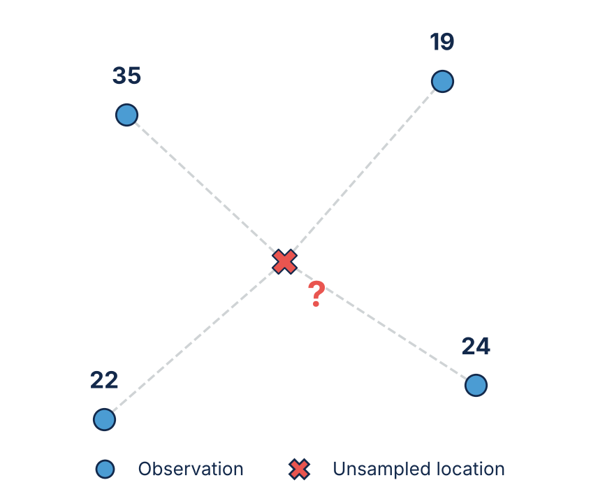
The assumption behind all of it is Tobler’s first law (Chapter 12): near things are more related than distant things. If values at nearby locations were unrelated, no method could estimate anything between them.
Interpolation estimates values within the area covered by the observations. Extrapolation estimates values beyond it, such as past the last station or above the highest observed value. Some methods can extrapolate; others can’t. Most interpolation outputs a raster (Chapter 14), with an estimate in every cell.
15.1.1 Five steps
Every interpolation, whatever the method, follows five steps:
- Choose a function and its parameters: the method, such as IDW or a polynomial, and settings such as the power or the order.
- Define the neighborhood: how far to search for observations, and in what shape.
- Find the points in the neighborhood: which observations fall inside it. This depends on how the data were sampled.
- Evaluate the function at every unknown location, usually every cell of the output raster.
- Estimate the error, with cross validation and RMSE.
15.1.2 Exact and inexact interpolators
An exact interpolator returns the observed value at every observation: the surface passes through every point. An inexact interpolator smooths the data, so its surface may miss the observations (Figure 15.2). Inexact isn’t necessarily worse. If the measurements contain error, forcing a surface through each one fits the noise.
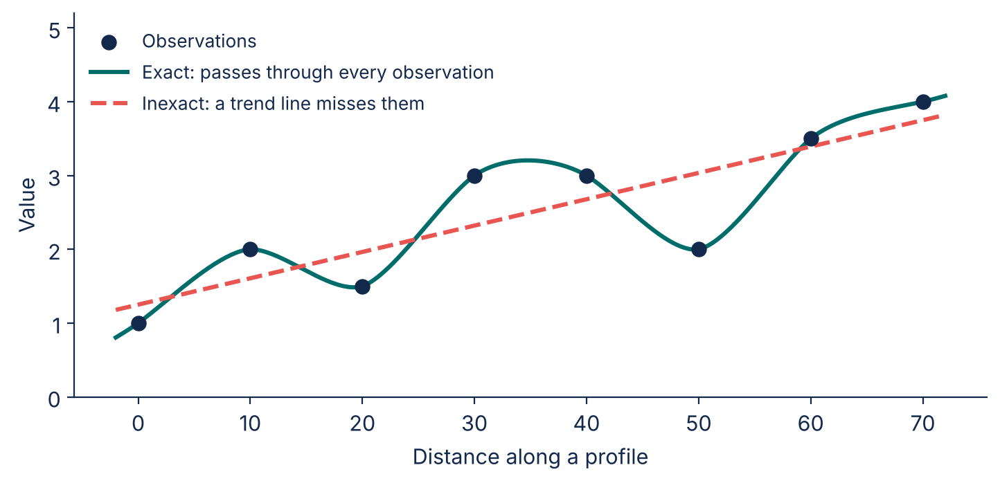
The methods in this chapter are deterministic: the surface is fully determined by a formula and the parameters you choose. Kriging (Chapter 16) is geostatistical: it models the spatial autocorrelation in the data, and also estimates the uncertainty of each prediction.
15.2 Step 1: Interpolation methods
15.2.1 Nearest neighbor and Thiessen polygons
The simplest method, nearest neighbor, gives each location the value of the closest observation. The result is the same as drawing Thiessen polygons (also called Voronoi polygons): each polygon contains exactly one observation, and every location inside it is closer to that observation than to any other. The boundaries are the perpendicular bisectors between neighboring observations (Figure 15.3).
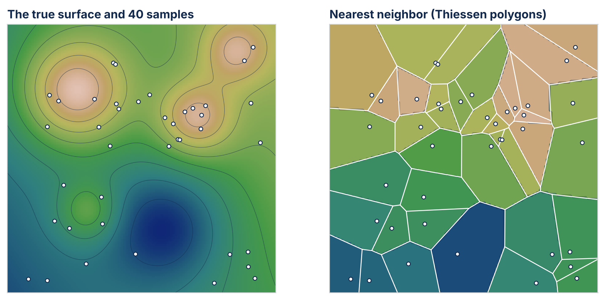
Nearest neighbor is the right choice for categorical data, such as soil type or land-cover class, where averaging values would make no sense. For continuous data, its weakness is the surface itself: values jump in steps at each polygon boundary instead of changing gradually (Figure 15.9, top left).
Thiessen polygons are useful in their own right. Figure 15.4 draws them around the major airports in the lower 48 states. Many U.S. weather stations, part of the Automated Surface Observing System (ASOS), are at airports, so a map like this shows which station’s reading nearest-neighbor interpolation would use where. The polygons range from about 3,000 km² in the Northeast to over 240,000 km² in the interior West. Large polygons show where estimates are least reliable, since they come from a station that may be hundreds of kilometers away.
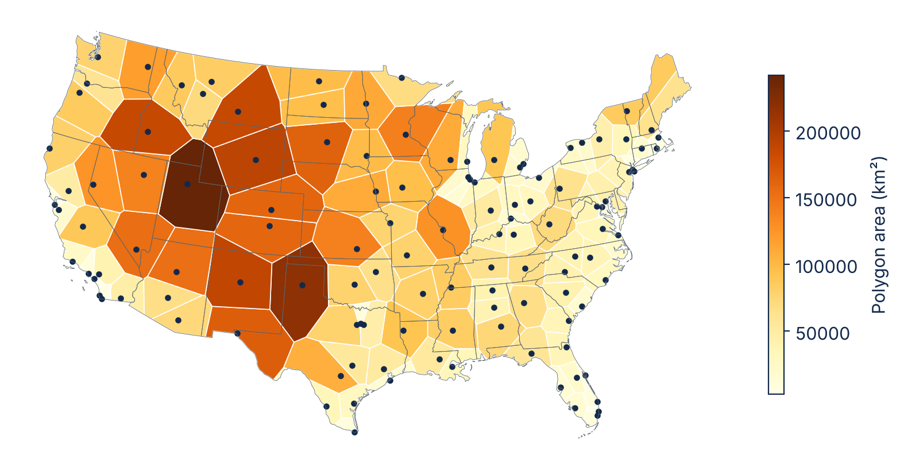
15.2.2 Average neighbor
Average neighbor interpolation draws a circle of radius r around each unknown location, and averages every observation inside it:
\[ \hat{z} = \frac{\sum z_i}{k_r} \]
where \(\hat{z}\) is the estimate, \(z_i\) are the observed values within the circle, and \(k_r\) is the number of observations found. In Figure 15.5, the circle captures four observations, 1, 2, 3, and 3, so the estimate is 9 ÷ 4 = 2.25.
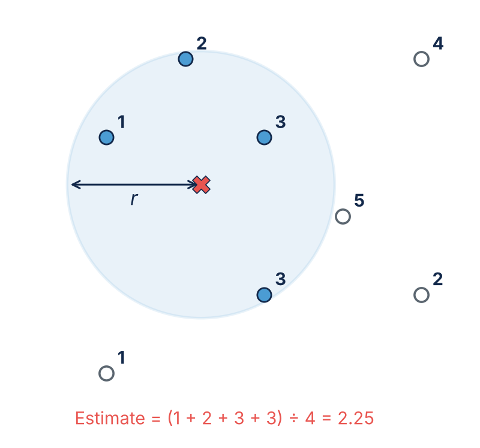
It is fast and smooths the data. But the radius is a subjective choice; a point at the edge of the circle counts as much as one next door; the method is not exact; and as an average, it can never estimate a value above the highest or below the lowest observation.
15.2.3 Inverse distance weighted (IDW)
Inverse distance weighted (IDW) interpolation refines the average by giving nearer observations more weight (Shepard 1968):
\[ \hat{z} = \frac{\sum z_i / d_i^{\,p}}{\sum 1 / d_i^{\,p}} \]
where \(d_i\) is the distance to observation \(i\), and \(p\) is the power. The power models the friction of distance. With \(p = 2\), the most common default, nearby points are far more influential than distant ones. As \(p\) grows, IDW approaches nearest neighbor; as \(p\) approaches 0, it approaches a simple average.
A worked example. Suppose we want the temperature at a location 40 km from Austin (19 °C), 50 km from San Antonio (22 °C), and 150 km from Houston (21 °C), with \(p = 1\) (Figure 15.6):
\[ \hat{z} = \frac{19/40 + 22/50 + 21/150}{1/40 + 1/50 + 1/150} = \frac{1.055}{0.05167} \approx 20.4 \text{ °C} \]
Houston, three times farther away, has little influence. (With \(p = 2\), the estimate is 20.2 °C: San Antonio and Austin matter even more. Avoid rounding the sums too early; rounding them to two places gives 21.)
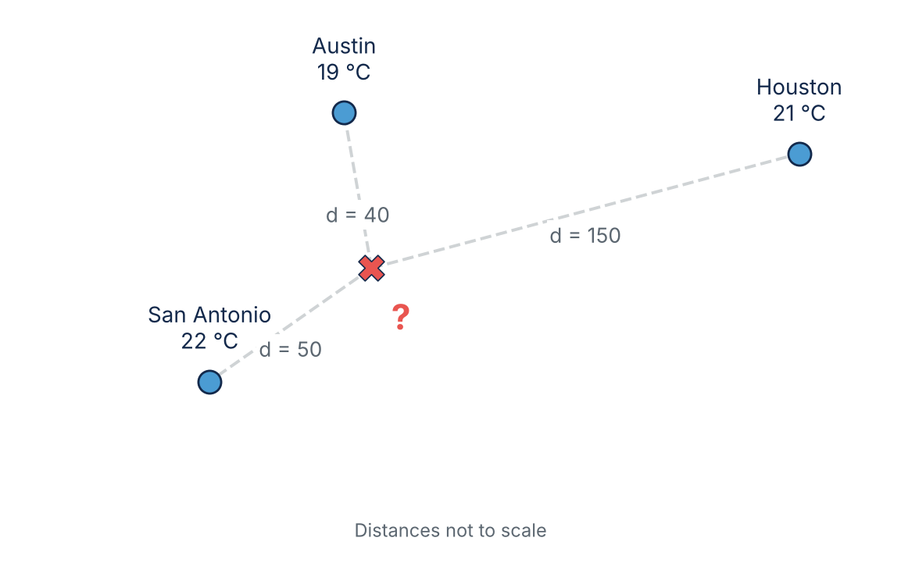
IDW is exact: at an observation the distance is 0, so that observation gets all the weight. It produces a continuous surface. But you must choose both the power and the number of neighbors, and the result is sensitive to both (Figure 15.7). Like average neighbor, it can’t predict values outside the observed range, so peaks and pits between observations are flattened. And it ignores direction. Its signature is the bull’s-eye: a ring around an observation whose value differs from its neighbors’.
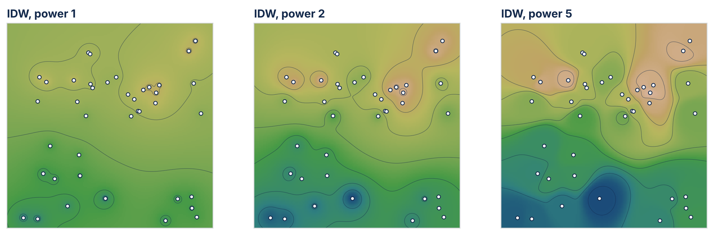
A city has 30 air-quality monitors, 25 of them in one neighborhood near the port. If you interpolate pollution with IDW and 12 neighbors, what happens to estimates on the far side of the city? How could the search neighborhood (Section 15.3) help?
15.2.4 Polynomial (trend surface) interpolation
Polynomial interpolation fits one mathematical surface, a trend surface, to all the observations, usually by least squares. The order of the polynomial, the highest power of \(x\) and \(y\) in its equation, sets how many bends the surface can have (Figure 15.8):
- First order is a tilted plane: \(\hat{z} = \beta_0 + \beta_1 x + \beta_2 y\).
- Second order can bend once, like a bowl or a ridge: \(\hat{z} = \beta_0 + \beta_1 x + \beta_2 y + \beta_3 x^2 + \beta_4 xy + \beta_5 y^2\).
- Third order can bend twice, adding the \(x^3\), \(x^2y\), \(xy^2\), and \(y^3\) terms.
Each \(\beta\) is a coefficient fit from the observations. Higher orders fit more closely, but quickly become unstable, especially near the edges of the data. Orders above 3 or 4 are rarely useful.
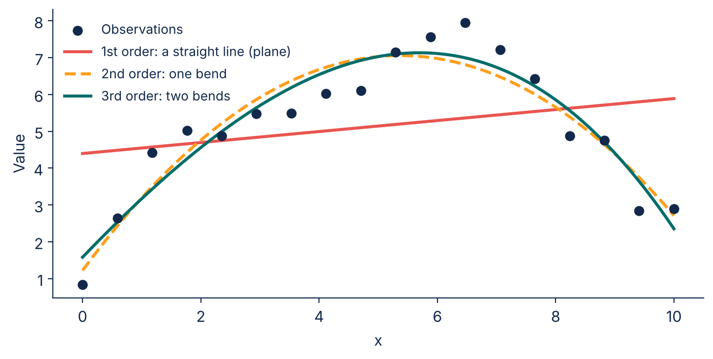
A global polynomial uses one formula for the whole study area. It is simple, with only the order to choose, and can extrapolate, but it is not exact and captures only the broad, regional pattern. That makes it useful for mapping a trend, or for removing one before interpolating what’s left (the residuals) with another method. A local polynomial fits a separate surface to each overlapping neighborhood and blends them. It follows complex surfaces and comes close to the observations, but requires more choices: the order, and the size and shape of the neighborhood.
15.2.5 Radial basis functions (splines)
Radial basis function (RBF) interpolation, often called a spline, fits a smooth surface that passes exactly through every observation while bending as little as possible. Think of a thin, flexible sheet pinned at every data point. RBFs are exact, smooth, and can extrapolate: between observations, the surface can rise above or dip below the observed values (Figure 15.9, bottom right). Their weakness is surfaces with abrupt changes, such as cliffs or faults, where a smooth sheet overshoots.
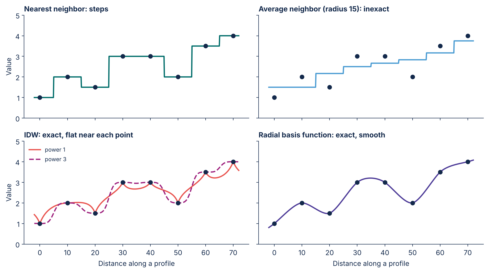
15.2.6 Comparing the methods
Figure 15.10 interpolates the same 40 samples from a made-up surface with five methods. All of them get the broad pattern. They differ in detail: Thiessen edges, IDW bull’s-eyes, the global polynomial’s smooth bowl, and the RBF’s curves. Because every surface looks plausible, we can’t pick the best by eye. That is what step 5, cross validation, is for (Section 15.4).
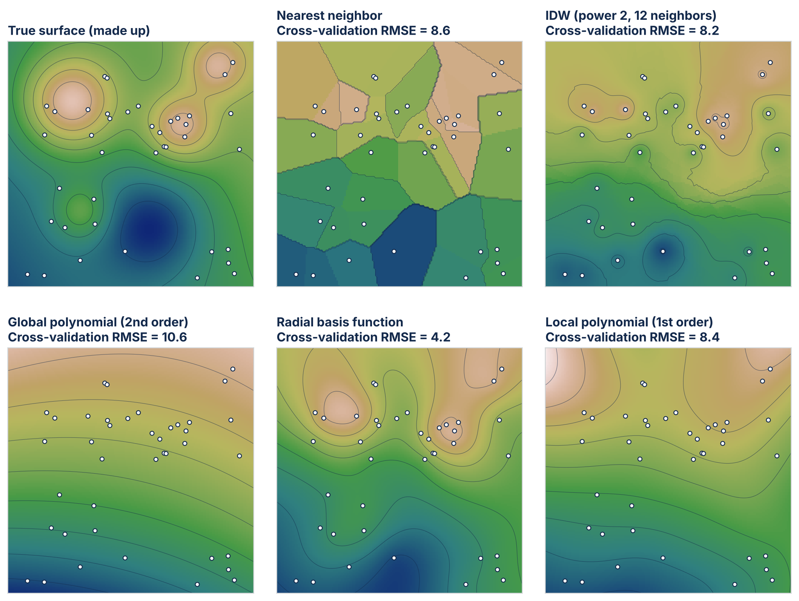
| Method | Exact? | Extrapolates? | Smooth? | Main choices |
|---|---|---|---|---|
| Nearest neighbor | Yes | No | No (steps) | None |
| Average neighbor | No | No | Yes | Radius r |
| IDW | Yes | No | Yes | Neighbors k, power p |
| Global polynomial | No | Yes | Yes | Order |
| Local polynomial | Nearly | Yes | Yes | Order, neighborhood |
| Radial basis function | Yes | Yes | Yes | Function, smoothing |
15.3 Steps 2 and 3: Neighborhoods and sampling
15.3.1 The search neighborhood
The search neighborhood decides which observations feed each estimate. Its settings can change the result as much as the choice of method (Figure 15.11):
- Radius. A fixed radius uses every observation within a set distance, which may be very few in sparse areas. A variable radius grows until it captures k points.
- Sectors. Dividing the circle into quadrants or octants, and taking a few points from each, stops one dense cluster on one side from dominating the estimate.
- Shape. A circle treats all directions equally. An ellipse suits a directional trend, where values change faster in one direction than another, such as across a valley rather than along it.
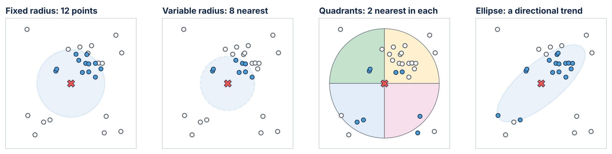
15.3.2 Sampling design
An interpolation can only be as good as its samples. Sampling is choosing where observations are collected, and there are four common designs (Figure 15.12):
- Systematic: points on a regular grid. Coverage is even and easy to plan, but a pattern that repeats at the grid spacing can be missed entirely.
- Random: every location has an equal chance. It avoids that bias, but by chance leaves some areas empty and others crowded.
- Clustered: points in groups, usually to save travel time in the field. It describes local variation well, but leaves gaps between clusters.
- Adaptive (multi-pass): a sparse first pass, then more samples where the first pass shows rapid change. It puts the effort where the surface is most complex, and is often the most efficient.
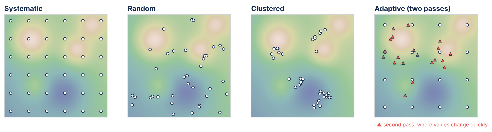
A useful rule: put more samples where the surface changes quickly, and fewer where it is uniform.
15.4 Step 5: Estimating the error
15.4.1 Cross validation
An interpolated surface always looks plausible, so we need a number that says how wrong it is likely to be. We usually can’t go back into the field, so we test the surface with the observations we already have. Cross validation (leave-one-out) works like this:
- Remove one observation from the data.
- Interpolate a value at its location from the remaining observations.
- Compare the estimate with the observed value, and save the error.
- Put the observation back, and repeat for every observation.
In Figure 15.13, the observation of 3.0 is removed. IDW with power 1, using its four neighbors (4 and 3 at distance 10; 4 and 2 at 14.14), estimates 3.29, an error of 0.29.
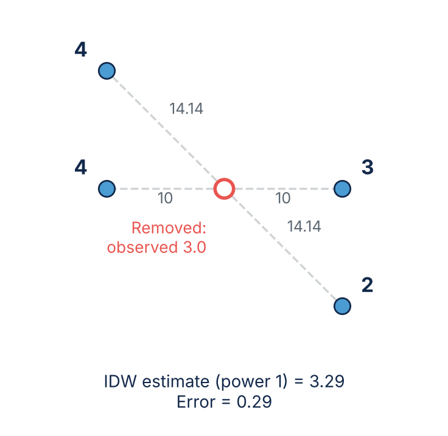
When there are enough observations, an alternative is validation: hold back a separate test set, build the surface from the rest, and measure the error only at the held-back points.
15.4.2 Root mean square error
Root mean square error (RMSE) summarizes the cross-validation errors in one number:
\[ \text{RMSE} = \sqrt{\frac{\sum (\hat{z}_i - z_i)^2}{n}} \]
where \(\hat{z}_i\) is the estimate at observation \(i\), \(z_i\) is its observed value, and \(n\) is the number of observations. Squaring keeps positive and negative errors from canceling; the square root returns to the original units. So an RMSE of 2 mm of rainfall means something directly. Lower is better. RMSE is the standard way to compare methods, or settings such as the IDW power, on the same data.
In Figure 15.10, the radial basis function has by far the lowest RMSE, 4.2, on a surface ranging from about 33 to 118. The global polynomial has the highest, 10.6, because a single bowl can’t follow two peaks and a basin. On a different surface, the ranking could change. That is the point: no method wins everywhere.
The mean error is worth checking too. It should be near 0. If it isn’t, the surface is biased: consistently too high or too low.
15.4.3 Four questions
Before trusting any interpolated surface, ask:
- What type of data is it? Categorical data call for nearest neighbor; continuous data allow the other methods.
- What is the error at the observations? Exact interpolators have none there, but that doesn’t make them right elsewhere.
- How does the surface behave between observations? Look for overshoot, bull’s-eyes, and flat spots.
- What does the error look like? Errors should look random. If they are consistently large in one region, the method or its settings are wrong there.
15.5 Interpolation in ArcGIS Pro and QGIS
- ArcGIS Pro. The Spatial Analyst toolbox has IDW, Spline (an RBF), Natural Neighbor, and Trend (a global polynomial). The Geostatistical Analyst extension adds the Geostatistical Wizard, which runs IDW, global and local polynomials, RBFs, and kriging with full control of the search neighborhood, and reports cross-validation statistics, including RMSE and the mean error. Create Thiessen Polygons (Analysis toolbox) draws Thiessen polygons.
- QGIS. The Processing Toolbox’s Interpolation group has IDW interpolation and TIN interpolation; GDAL’s Grid tools add nearest neighbor, moving average (average neighbor), and inverse distance to a power; and Voronoi polygons draws Thiessen polygons. SAGA and GRASS add splines and kriging.
15.6 Check your understanding
An interpolator whose surface passes through every observation is:
Which method suits categorical data, such as soil type?
Using IDW with power 1, estimate the temperature 40 km from Austin (19 °C), 50 km from San Antonio (22 °C), and 150 km from Houston (21 °C), to one decimal.
Average neighbor with observations 1, 2, 3, and 3 inside the radius gives what estimate?
Which of these methods can predict values above the highest observation?
A second-order polynomial can bend how many times?
In cross validation, each observation is:
When comparing methods on the same data, a lower RMSE is better.
15.7 Summary
- Spatial interpolation estimates values at unsampled locations from observations, relying on Tobler’s first law. Extrapolation goes beyond the observations.
- Every interpolation has five steps: choose a function, define the neighborhood, find the points, evaluate the function, and estimate the error.
- Exact interpolators pass through every observation; inexact ones smooth. Deterministic methods use a formula; geostatistical methods (kriging) model autocorrelation and uncertainty.
- Nearest neighbor (Thiessen polygons) suits categories but gives a stepped surface. Average neighbor smooths but is inexact. IDW weights by distance raised to a power; it is exact but forms bull’s-eyes and can’t exceed the observed range.
- Polynomial interpolation fits a trend surface whose order sets its bends; global polynomials show broad trends, local ones follow detail. Radial basis functions (splines) are exact, smooth, and can extrapolate.
- The search neighborhood (radius, sectors, shape) and the sampling design (systematic, random, clustered, adaptive) shape every result.
- Cross validation and RMSE compare methods objectively. Lower RMSE is better, and the mean error should be near 0.
15.8 Exercises
- IDW by hand. Redo the Austin–San Antonio–Houston example with power 2 and power 3. How does the estimate change, and why?
- Thiessen polygons. In QGIS or ArcGIS Pro, draw Thiessen polygons around the weather stations in North Carolina (from the State Climate Office of North Carolina or NOAA’s station list). Which part of the state has the largest polygons?
- Compare methods. Download a month of rainfall totals for North Carolina stations from NOAA’s Climate Data Online. Interpolate them with IDW (powers 1, 2, and 3) and a spline. Which has the lowest cross-validation RMSE?
- Sampling. You must sample soil lead in a 1 km² neighborhood with a possible hot spot near an old gas station. Which sampling design would you use, and how many samples would go near the station?
- Bull’s-eyes. Find a published IDW map (for example, of precipitation or groundwater). Can you spot bull’s-eyes? What do they tell you about the stations?
15.9 Further reading and online resources
15.9.1 Books
- GIS Fundamentals, by Paul Bolstad (Bolstad 2022). The chapter on spatial estimation covers sampling, IDW, splines, and kriging.
- Geographic Information Analysis, by David O’Sullivan and David Unwin (O’Sullivan and Unwin 2010), has a thorough chapter on interpolation.
- Geospatial Analysis: A Comprehensive Guide, by de Smith, Goodchild, and Longley, free online, with a long section on deterministic interpolation: https://www.spatialanalysisonline.com.
- Intro to GIS and Spatial Analysis, by Manuel Gimond, free online, chapter on spatial interpolation: https://mgimond.github.io/Spatial/spatial-interpolation.html.
15.9.2 ArcGIS Pro
- Esri, “Comparing interpolation methods”: https://pro.arcgis.com/en/pro-app/latest/tool-reference/3d-analyst/comparing-interpolation-methods.htm.
- Esri, “How IDW works”: https://pro.arcgis.com/en/pro-app/latest/tool-reference/3d-analyst/how-idw-works.htm.
- Esri, “How Spline works”: https://pro.arcgis.com/en/pro-app/latest/tool-reference/3d-analyst/how-spline-works.htm.
- Esri, “Performing cross validation and validation”: https://pro.arcgis.com/en/pro-app/latest/help/analysis/geostatistical-analyst/performing-cross-validation-and-validation.htm.
- Esri, “Create Thiessen Polygons”: https://pro.arcgis.com/en/pro-app/latest/tool-reference/analysis/create-thiessen-polygons.htm.
15.9.3 QGIS
- QGIS User Guide, “Interpolation” algorithms (IDW and TIN): https://docs.qgis.org/latest/en/docs/user_manual/processing_algs/qgis/interpolation.html.
- QGIS User Guide, GDAL “Raster analysis” algorithms (Grid tools): https://docs.qgis.org/latest/en/docs/user_manual/processing_algs/gdal/rasteranalysis.html.
- QGIS Training Manual, “Spatial Statistics” and interpolation lessons: https://docs.qgis.org/latest/en/docs/training_manual/processing/interpolation.html.
15.9.4 Data
- NOAA National Centers for Environmental Information, Climate Data Online: https://www.ncei.noaa.gov/cdo-web/.
- State Climate Office of North Carolina: https://climate.ncsu.edu.
- PRISM Climate Group, Oregon State University, which publishes interpolated climate maps for the United States: https://prism.oregonstate.edu.
- The GIS&T Body of Knowledge, “Spatial Interpolation” topics: https://www.ucgis.org/site/gis-t-body-of-knowledge.